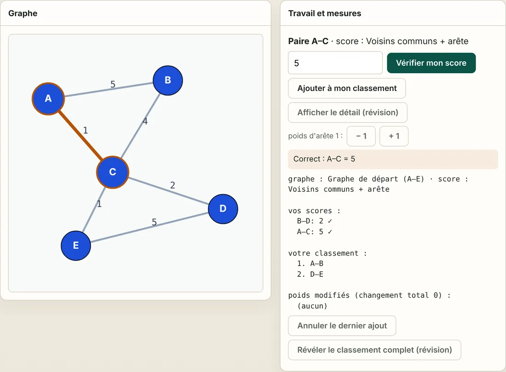

Lab 02 · Fondamentaux
Métriques d'affinité
Avant qu'un algorithme de clustering fusionne deux cellules, il lui faut un score qui dit à quel point elles vont ensemble. Ce lab compare trois scores (poids d'arête, voisins communs, et nombre de broches pour les nets à plusieurs broches) et montre que ce choix change la paire qui fusionne en premier.
Diapositives
Les 22 diapositives de la vidéo. Cliquez sur l'une d'elles pour l'afficher en grand, ou téléchargez la présentation complète.


Lab interactif

Faites les calculs vous-même, directement dans le navigateur :
- Choisissez n'importe quelle paire de nœuds, même sans arête, calculez son score à la main et vérifiez-le.
- Construisez votre propre classement, dans l'ordre. Le départage compte.
- Modifiez les poids des arêtes et regardez quelle paire fusionne en premier.
- Trois graphes (départ, priorité, petite netlist) et quatre scores.
Dix défis, de l'initiation à l'approfondissement, vérifient vos propres réponses. Les aides à la révision sont là si vous bloquez, mais ce qu'elles révèlent ne compte plus.
Implémentation (parcours A)
Écrivez vous-même les trois fonctions de score et vérifiez-les avec les résultats de référence. Les commandes ci-dessous se lancent dans le dépôt du cours, depuis courses/learn_clustering/module01-01-affinity-metrics/.
tiny_graph.jsonGraphe de départ (référence 1)
priority_graph.jsonGraphe de priorité : la première fusion s'inverse (référence 2)
tiny_netlist.jsonPetite netlist avec nets larges (référence 3)
affinity_check.pyVérificateur ; --impl contrôle votre code
Exemples — Métriques d'affinité
Parcours A (implémentation). Fonctions partagées : ../common/graphutil.py.
Objectif
Définir trois scores d'affinité, les calculer à la main et en code, et montrer que le choix du score change la paire qui fusionne en premier.
L'affinité répond à une seule question pour chaque paire de cellules : à quel point ces deux-là veulent-elles être dans le même cluster ? Tous les algorithmes de clustering de la suite du cours (fusion gloutonne, réduction multiniveau, clustering d'hypergraphe) partent d'un tel classement : un mauvais score donne de mauvaises fusions, que le raffinement devra réparer ensuite.
| Score | S'applique à | Idée |
|---|---|---|
| Poids d'arête | graphe | connexion directe uniquement |
| Voisins communs + arête | graphe | connexion directe plus le soutien des voisins communs (« connectivité ») |
| Nombre de broches (modèle en clique) | netlist | chaque net répartit son poids entre ses broches, donc les nets larges comptent moins |
API (cible)
affinity_edge_weight(edges) -> list[(u, v, score)] # trié
affinity_shared_neighbors(nodes, edges) -> list[(u, v, score)] # trié
affinity_pin_count(nodes, hyperedges) -> list[(u, v, score)] # trié
Trié veut dire : score décroissant, puis u, puis v par ordre alphabétique. Ce départage
fait partie de l'API : A–B et D–E valent toutes les deux 5, et le résultat de référence met A–B en
premier car A < D. Les labs suivants (fusion gloutonne) prennent la première paire : un départage
instable change donc leurs résultats.
Définitions
Affinité par poids d'arête
score(u,v) = w(u,v)
Affinité par voisins communs + arête
score(u,v) = w(u,v) + somme_x min(w(u,x), w(v,x))
sur les voisins communs x
w(u,v) vaut 0 s'il n'y a pas d'arête directe. Une paire sans arête mais avec un voisin commun
obtient quand même un score (B–D ci-dessous). Les paires dont le score vaudrait 0 ne sont pas
listées. Le min signifie qu'un voisin ne soutient une paire qu'autant que son rayon le plus faible.
Affinité par nombre de broches (modèle en clique) pour les netlists, où un net peut relier de nombreuses broches :
score(u,v) = somme, sur les nets e contenant u et v, de w(e) / (|e| - 1)
|e| est le nombre de broches du net. Un net à 2 broches donne tout son poids ; un net à 5 broches
ne donne qu'un quart à chaque paire. Les nets larges comme le reset, l'enable ou l'horloge touchent
de nombreuses cellules et ne doivent pas toutes les coller ensemble.
Pseudo-code
affinity_shared_neighbors(nodes, edges):
adj = table d'adjacence, adj[u][v] = w(u,v) (dans les deux sens)
score = {}
pour (u, v, w) dans edges : score[u,v] += w # partie directe
pour chaque paire non ordonnée (u, v) de nœuds :
s = 0
pour x dans voisins(u), x != v :
si x dans voisins(v) :
s += min(adj[u][x], adj[v][x])
si s > 0 ou (u,v) dans score : score[u,v] += s
renvoyer les paires triées par (-score, u, v)
affinity_pin_count(nodes, nets):
score = {}
pour chaque net e de broches P (|P| >= 2) :
part = w(e) / (|P| - 1)
pour chaque paire (u, v) de P : score[u,v] += part
renvoyer les paires triées par (-score, u, v)
Référence 1 — graphe de départ (examples/tiny_graph.json)
Arêtes : A–B 5, A–C 1, B–C 4, C–D 2, D–E 5, C–E 1.
Poids d'arête (exactement les six arêtes existantes) :
| Rang | Paire | Score |
|---|---|---|
| 1 | A–B | 5 |
| 2 | D–E | 5 |
| 3 | B–C | 4 |
| 4 | C–D | 2 |
| 5 | A–C | 1 |
| 6 | C–E | 1 |
Voisins communs + arête (dix paires : les six arêtes, plus quatre paires qui n'ont qu'un voisin en commun) :
| Rang | Paire | Score | Pourquoi |
|---|---|---|---|
| 1 | A–B | 6 | 5 + via C min(1,4)=1 |
| 2 | D–E | 6 | 5 + via C min(2,1)=1 |
| 3 | A–C | 5 | 1 + via B min(5,4)=4 |
| 4 | B–C | 5 | 4 + via A min(5,1)=1 |
| 5 | C–D | 3 | 2 + via E min(1,5)=1 |
| 6 | C–E | 3 | 1 + via D min(2,5)=2 |
| 7 | B–D | 2 | pas d'arête ; via C min(4,2)=2 |
| 8 | A–D | 1 | pas d'arête ; via C min(1,2)=1 |
| 9 | A–E | 1 | pas d'arête ; via C min(1,1)=1 |
| 10 | B–E | 1 | pas d'arête ; via C min(4,1)=1 |
L'arête faible A–C passe du rang 5 au rang 3, car A et C sont tous les deux fortement reliés à B : le triangle A–B–C forme un groupe dense.
Référence 2 — l'affinité change la première fusion (examples/priority_graph.json)
Un triangle serré P–Q–R (chaque arête pèse 4) et une paire isolée X–Y (poids 5).
| Score | Première fusion | Pourquoi |
|---|---|---|
| Poids d'arête | X–Y @ 5 | l'arête la plus lourde |
| Voisins communs + arête | P–Q @ 8 | 4 + via R min(4,4)=4 ; X–Y n'a aucun voisin commun et reste à 5 |
Même graphe, même algorithme, première fusion différente. C'est pourquoi le choix de l'affinité est une décision de conception, pas un détail.
Référence 3 — les nets larges (examples/tiny_netlist.json)
Deux nets à 5 broches (en, rst) touchent A–E ; un net privé à 2 broches relie E–F. Tous les poids valent 1.
| Score | A–B (et chaque paire de A–E) | E–F | Première fusion |
|---|---|---|---|
| Nombre brut de nets (somme des w) | 2 | 1 | A–B |
| Nombre de broches, w/(|e|−1) | 1/4 + 1/4 = 0.5 | 1.0 | E–F |
Compter naïvement les nets partagés dit que A–B vont ensemble simplement parce qu'elles voient toutes les deux l'enable et le reset. Le score par nombre de broches dit que E–F, la seule paire reliée par une connexion privée, compte davantage. Le clustering d'une netlist devient du clustering d'hypergraphe (module 03-03) ; ce score fait le lien.
À essayer
Depuis le dossier de ce module :
# indiquer à Python où sont les fonctions partagées
export PYTHONPATH=../common
# afficher les deux classements du graphe de départ
python3 ../common/solvers.py examples/tiny_graph.json --mode affinity
# idem pour le graphe de priorité : comparez la première ligne de chaque tableau
python3 ../common/solvers.py examples/priority_graph.json --mode affinity
# vérifier tous les résultats de référence et afficher les classements, nombre de broches compris
python3 examples/affinity_check.py --show
# vérifier VOTRE implémentation (les fonctions pas encore écrites sont ignorées)
python3 examples/affinity_check.py --impl my_affinity.py
Tests unitaires des fonctions partagées, depuis courses/learn_clustering :
PYTHONPATH=common python3 -m unittest common.test_solvers.TestFoundations -v
Pour démarrer
- Calculez à la main le score par voisins communs de A–C, B–D et C–E, puis comparez avec la référence 1.
- Implémentez
affinity_edge_weightetaffinity_shared_neighbors; lancezaffinity_check.py --impljusqu'à ce que les vérifications sur les graphes passent. (Il fournit les arêtes dans l'ordre inverse : un départage oublié échoue.) - Expliquez en une phrase pourquoi A–C monte avec le score par voisins communs.
- Sur le graphe de priorité, expliquez pourquoi la première fusion change d'un score à l'autre.
- Implémentez
affinity_pin_count. Expliquez pourquoi A–B tombe à 0.5 alors que E–F reste à 1. - Pour aller plus loin : copiez le graphe de départ et passez D–E de 5 à 6. Prédisez d'abord les deux classements, puis lancez le solveur sur votre copie. Quelle paire est maintenant en tête, et A–C monte-t-elle toujours ?
Quiz
7 questions rapides sur ce lab. Choisissez une réponse pour chacune, puis vérifiez.
Transcription complète de la narration
Métriques d'affinité
Quelles parties d'une puce vont ensemble ? C'est la question à laquelle répond ce lab. Une puce est faite de millions de minuscules éléments appelés cellules. Avant de les placer, un ordinateur doit savoir quelles cellules aiment rester proches. Cette attirance est un nombre, qu'on appelle l'affinité. Dans ce lab, vous allez découvrir trois façons de la calculer, et voir pourquoi ce choix compte.
D'une puce à un graphe
Une puce contient des cellules, les petites briques du circuit. Les cellules communiquent entre elles par des fils. On dessine chaque cellule comme un point, appelé nœud. Un trait entre deux points est une arête : les deux cellules sont reliées. Le nombre sur une arête est son poids : combien de fils relient la paire. Ainsi, A–B a un poids de cinq : cinq fils relient A et B. Ce dessin s'appelle un graphe, et c'est la carte sur laquelle travaillent tous les algorithmes de ce cours.
Pourquoi regrouper les cellules ?
Les cellules qui échangent beaucoup de signaux doivent être proches. Des fils courts rendent la puce plus rapide et économisent de l'énergie. Regrouper les cellules proches s'appelle le clustering, et chaque groupe est un cluster. Pensez à un plan de classe : les amis qui discutent beaucoup s'assoient ensemble. Ici, A, B et C forment un groupe, et D et E en forment un autre. Seules les arêtes rouges passent d'un groupe à l'autre, et on en veut le moins possible.
Qu'est-ce que l'affinité ?
L'affinité est un score donné à chaque paire de cellules. Un score élevé veut dire que ces deux-là doivent être dans le même groupe. Un score faible veut dire qu'elles peuvent être séparées. Les algorithmes de clustering fusionnent d'abord la paire qui a le meilleur score. La recette du score décide donc de tout ce qui suit. Ce lab compare trois recettes sur le même petit exemple.
Un petit graphe pondéré
Voici notre exemple pour tout le lab : cinq cellules, de A à E. Les arêtes lourdes sont A–B et D–E, avec un poids de cinq chacune. C est au milieu, avec des liens plus fins vers les autres. Gardez cette image en tête : nous allons donner un score à chaque paire de cellules de ce graphe.
L'affinité par poids d'arête classe les paires
La première recette est la plus simple. Le score d'une paire est simplement le poids de l'arête qui les relie. Ensuite, on trie les paires du plus grand au plus petit score, comme un classement sportif. A–B et D–E sont à égalité, à cinq. Quand deux scores sont égaux, on les départage par ordre alphabétique : A–B passe donc en premier. Ce départage fixe est important : il garantit que l'ordinateur donne toujours la même réponse.
Les voisins communs renforcent A–B
La deuxième recette ajoute une idée de la vie de tous les jours : les amis de nos amis. Si deux personnes ont un ami proche en commun, elles sont sans doute proches aussi. A et B sont reliés directement, avec un poids de cinq. Ils ont aussi un voisin en commun : C. On ajoute le plus faible des deux liens qui passent par C, c'est-à-dire un, donc A–B monte à six. Pourquoi le plus faible ? Parce qu'une chaîne n'est jamais plus solide que son maillon le plus faible.
Le classement par voisins communs rebat les cartes
Avec la deuxième recette, A–B et D–E restent en tête, maintenant à six. Mais regardez A–C : seule, c'était une arête faible de poids un, et maintenant elle bondit à cinq, grâce à B. Même des paires sans aucune arête, comme B–D, obtiennent un score, parce qu'elles ont un voisin en commun.
Pourquoi l'affinité compte en EDA
EDA signifie conception électronique automatisée : ce sont les logiciels qui conçoivent les puces. En EDA, l'affinité est la préférence locale : quelles cellules vont ensemble, avant toute règle sur la puce entière. Une mauvaise affinité donne de mauvaises fusions, et les corriger ensuite est bien plus difficile.
Exemple résolu : le score de A–C
Calculons un score ensemble, étape par étape. Étape un : l'arête directe A–C a un poids de un. Étape deux : A et C ont un voisin en commun, B. Les liens qui passent par B pèsent cinq et quatre, on garde le plus petit : quatre. Étape trois : on additionne, un plus quatre font cinq. Seule, A–C était faible, mais elle devient forte grâce à son ami commun.
Dix paires, pas six
Avec la deuxième recette, notre petit graphe donne dix paires au lieu de six. Quatre d'entre elles n'ont aucun fil entre elles. Par exemple, B et D ne sont pas reliés, mais tous les deux sont reliés à C. B–D obtient donc le plus faible de ces deux liens : deux. C'est comme deux personnes qui ne se sont jamais vues mais ont le même meilleur ami. Seules les paires dont le score vaudrait zéro sont exclues.
La deuxième recette en pseudo-code
Voici la deuxième recette écrite sous forme d'étapes qu'un ordinateur peut suivre. D'abord, chaque arête ajoute son poids à sa propre paire. Ensuite, pour chaque paire de nœuds, on regarde chaque voisin qu'ils ont en commun. Pour chaque voisin commun, on ajoute le plus petit de ses deux liens. On garde chaque paire dont le score finit au-dessus de zéro. Enfin, on trie par score décroissant et on départage les égalités par ordre alphabétique.
Même graphe, première fusion différente
Voici un deuxième exemple qui montre pourquoi la recette compte. Prenons un triangle serré P, Q, R, dont chaque arête pèse quatre. À côté, une paire isolée X–Y a un poids de cinq. La première recette choisit X–Y, car cinq bat quatre. La deuxième donne à P–Q quatre, plus quatre via R : huit. P–Q passe donc en premier. Même graphe, même règle de fusion, mais une première fusion différente.
Des nets à nombreuses broches
Sur une vraie puce, un même fil peut relier plusieurs cellules à la fois. Un tel fil partagé s'appelle un net, et chaque cellule qu'il touche est une broche. Pensez à une discussion de groupe à cinquante : elle en dit peu sur qui est ami avec qui. Un message privé entre deux personnes en dit beaucoup plus. La troisième recette fonctionne pareil : chaque net partage son poids entre ses broches. La règle : le poids divisé par le nombre de broches moins un. Ici, les nets enable et reset touchent cinq cellules chacun, ils ne donnent donc qu'un quart à chaque paire. Le net privé entre E et F donne tout son poids, c'est-à-dire un.
Le parcours lab dans le navigateur
À vous maintenant de calculer des scores, dans le lab du navigateur. Cliquez sur deux nœuds pour choisir une paire, même une paire sans arête, calculez son score à la main, puis saisissez-le. Le lab vous dit tout de suite si c'est juste. Vous pouvez aussi construire votre propre classement, une paire à la fois, et modifier les poids des arêtes pour voir quelle paire fusionne en premier. Les dix défis vont du plus facile au plus difficile. Si vous bloquez, le bouton de détail montre le calcul, mais cette réponse ne compte plus pour le défi.
Le parcours implémentation
Si vous aimez programmer, le parcours implémentation est fait pour vous. D'abord, affichez les deux classements avec le programme de référence, pour le graphe de départ puis pour le graphe de priorité. Ensuite, écrivez vos trois fonctions de score en Python. Enfin, lancez le vérificateur sur votre fichier. Il compare vos réponses aux bonnes, et il fournit les arêtes dans le désordre : un départage oublié apparaît donc comme un échec.
Les pièges à éviter
Attention à quatre erreurs fréquentes. Compter deux fois une arête, une fois depuis chaque extrémité. Ajouter le lien le plus fort au lieu du plus faible : tout semble alors proche de tout. Oublier le départage : A–B et D–E changent de place d'une exécution à l'autre. Et compter les grands nets partagés à plein poids, ce qui colle des cellules sans rapport.
Récapitulatif : trois recettes
Recette un, le poids d'arête : on ne regarde que le fil direct. Recette deux, les voisins communs : on ajoute l'aide des amis communs. Recette trois, le nombre de broches : un grand net partagé compte moins qu'un net privé. Les égalités se départagent par ordre alphabétique, donc les résultats ne changent jamais. Des recettes différentes peuvent choisir une première fusion différente. Choisir la recette est une décision de conception, pas un détail.
À vous de jouer
Essayez les défis du lab, ou écrivez les trois recettes et passez le vérificateur. Puis expliquez deux choses avec vos propres mots. D'abord, pourquoi A–C monte-t-elle avec la deuxième recette ? Ensuite, pourquoi le graphe de priorité change-t-il sa première fusion ? Faites le petit quiz, puis passez à la fusion gloutonne par paires. Là, ces scores deviennent la règle de fusion.